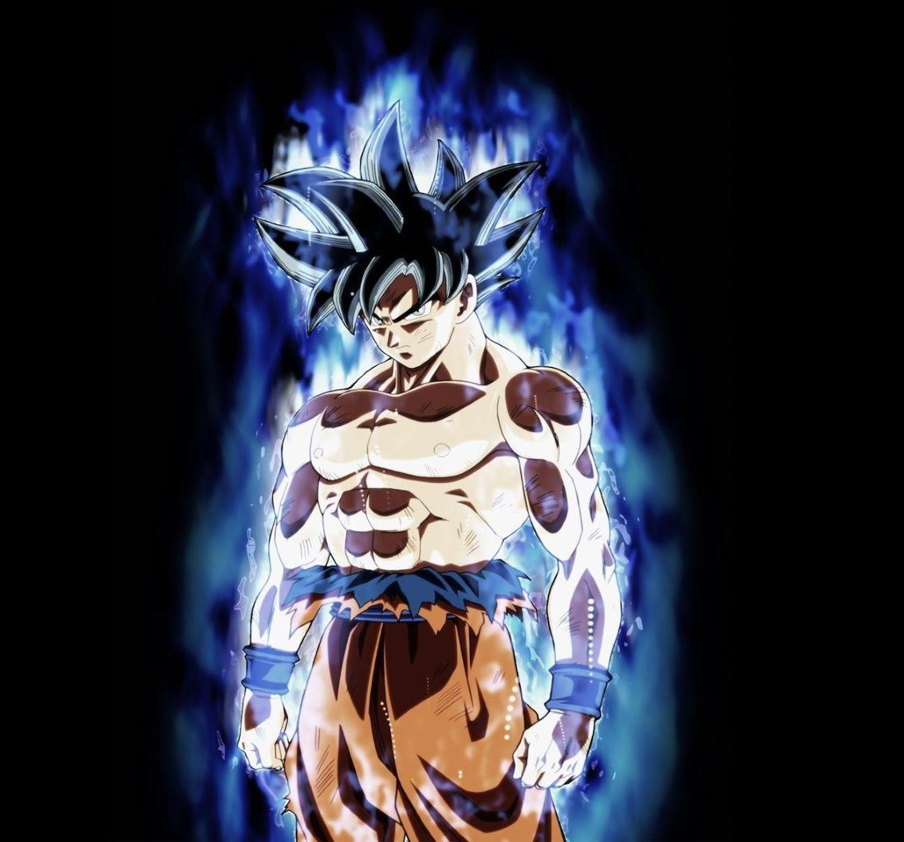
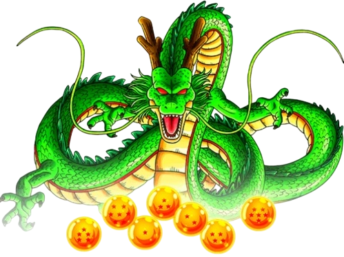
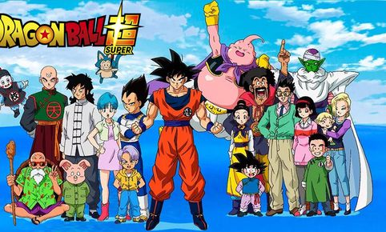

¿Qué es Dragon Ball?

Dragon Ball es una de las franquicias de anime y videojuegos más populares del mundo. Sus juegos permiten recrear combates épicos y vivir aventuras junto a Goku, Vegeta, Gohan y muchos personajes más.

Universo Dragon Ball Games
Explora los títulos más emocionantes del universo Dragon Ball.

Dragon Ball es una de las franquicias de anime y videojuegos más populares del mundo. Sus juegos permiten recrear combates épicos y vivir aventuras junto a Goku, Vegeta, Gohan y muchos personajes más.